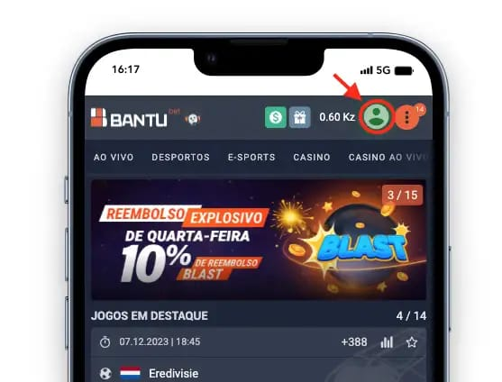
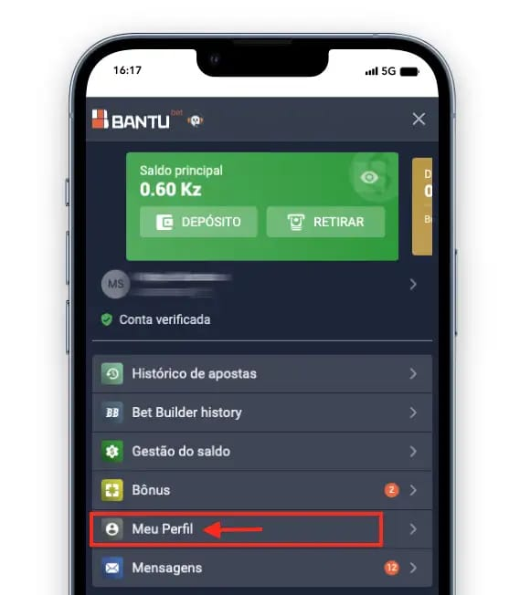
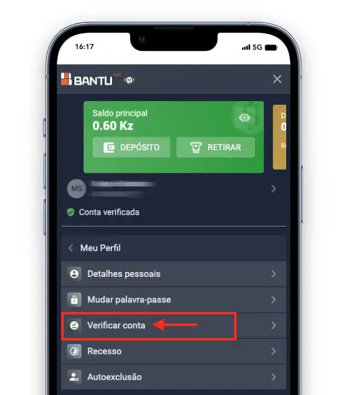
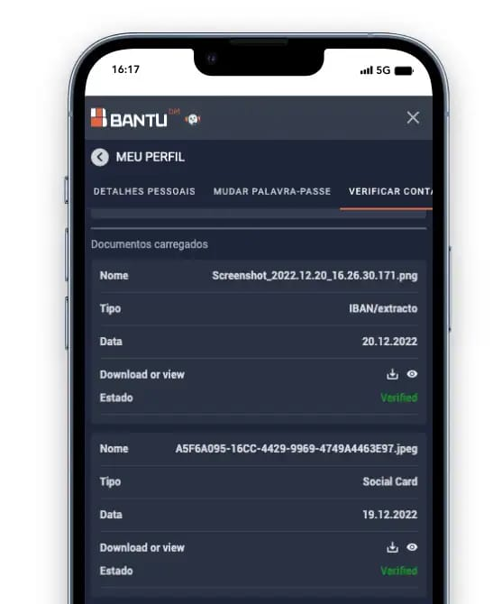
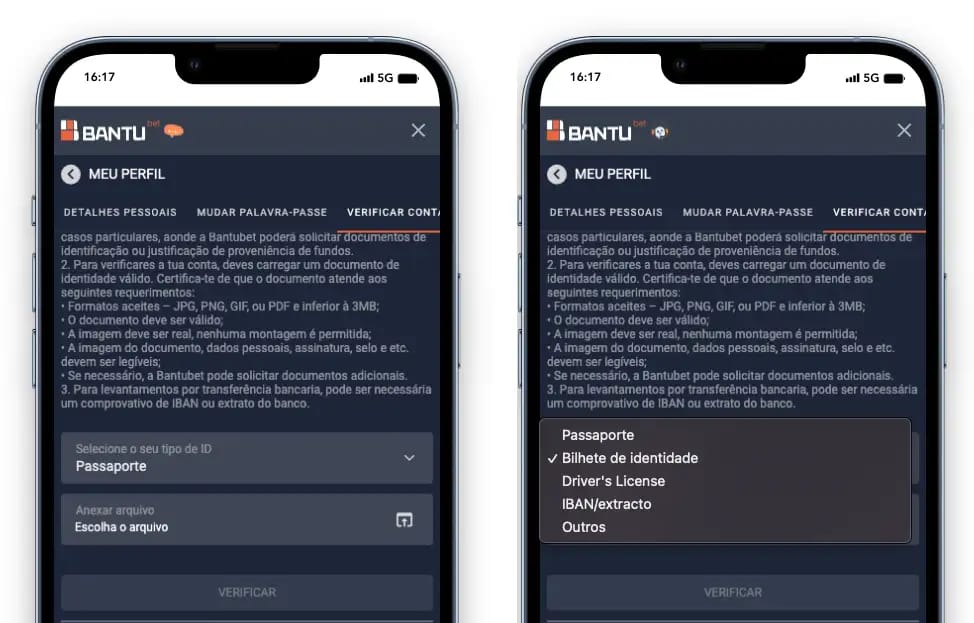

Como verificar conta na Bantu Bet? Passo a Passo
Neste artigo vais aprender um passo a passo de como verificar conta na Bantu Bet sem complicação.
Após criares a tua conta na Bantu Bet poderás fazer depósitos, apostas, igualmente levantar o seu prémio de até 50Mil Kz, sem precisar apresentar nenhuma documentação.
Excepto portanto em alguns casos onde a BantuBet poderá solicitar documentos de identificação.
Passo a Passo para verificar conta na Bantu Bet
Siga os passos abaixo para verificar a tua conta na Bantu Bet
1. Primeiramente, Com a sua sessão iniciada na Bantu Bet clique no botão “Conta”
2. Em segundo lugar, clique em “Meu Perfil”
3. Em terceiro lugar clique em “Verificar Conta”
4. Em seguida carregue um documento para verificar a sua identidade (Passaporte, Bilhete de Identidade, Carta de Condução e IBAN/Extrato bancário). Entretanto pode ser uma foto do documento ou PDF.
5. Após carregar o Documento irá aparecer assim na sua tela (Mas o estado estará em aprovação na cor laranja, pode levar até 5 dias para a verificação da conta ser concluída e vir escrito em verde “Verified”).
